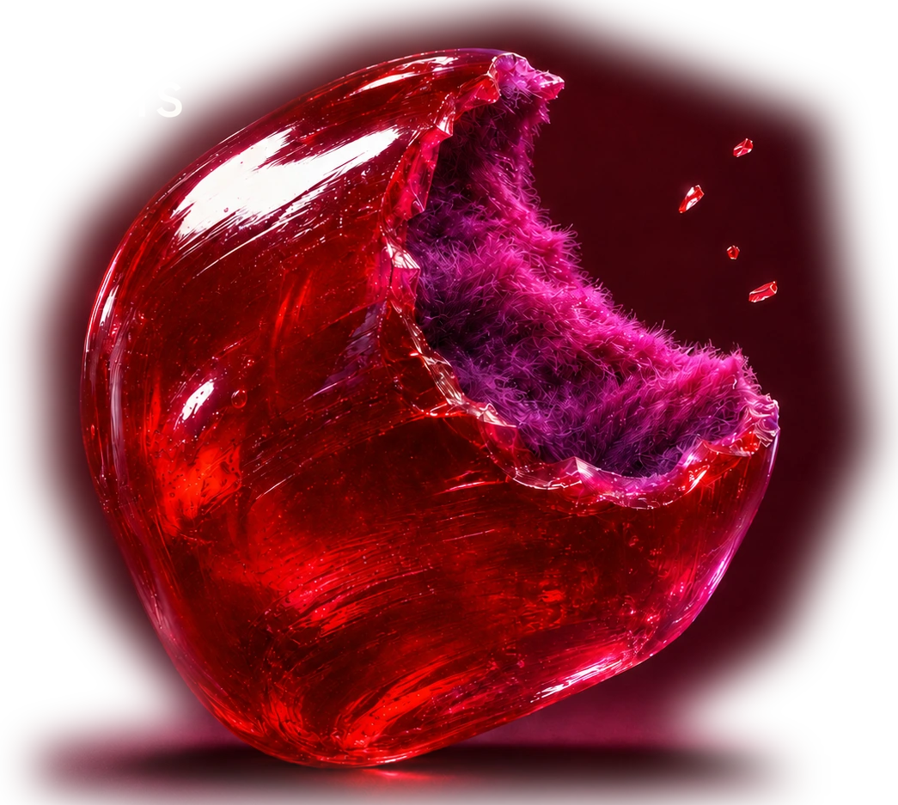
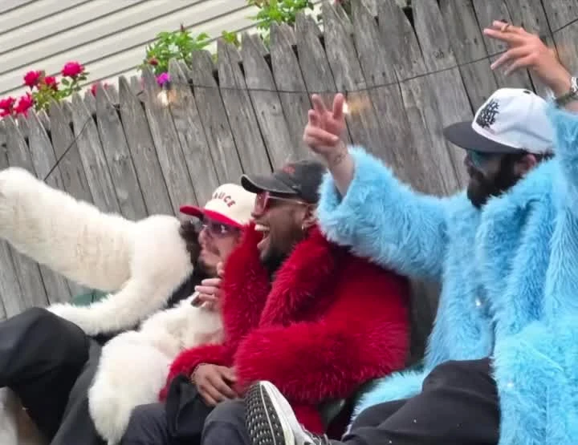

FUZZY JACKETS / SINGLE SERIESSTEREO ● ●FJ — 004
Discography
The singles.
Video
Watch.
Studio audience moments
Three fuzzy coats in the audience at LIVE with Kelly and Mark. Two clips from the band’s channel.

On Instagram
#stayfuzzy.
Live dates